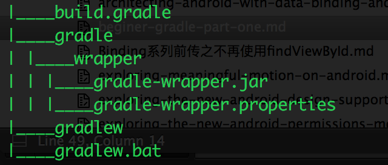

Gradle是一个不断迭代的工具，往往在一个新版本的使用上会打破向后兼容问题，这时候使用Gradle Wrapper可以避免这个问题，并且能够保证构建是可重复的。
Grdle Wrapper分别为各个操作系统提供了执行工具，Windows上是一个batch文件，而Linux/Unix是一个shell脚本。当运行这个脚本的时候，所需要的Gradle版本会自动下载到本地，当然如果已经下载过了，他就会直接使用该版本的Gradle进行构建工作。Gradle Wrapper存在的意义就是它可以不借助开发者机器或者自构建系统依然可以运行Wrapper，然后由Wrapper搞定剩余的部分。因此，在开发者的机器上或者构建服务器上没有安装正确的Gradle依然可以通过Wrapper进行构建。此外，Gradle还建议把Wrapper文件添加到你的版本控制系统中。
注意：运行Gradle Wrapper和直接运行Gradle进行构建是没什么不同的。
Gradle Wrapper的获取
当使用Android Studio创建一个项目时，IDE会自动为你生成一个Gradle Wrapper的文件夹，如下图所示：

图中可以看到gradle目录下的wrapper包含两个文件一个是gradle-wrapper.jar一个是gradle-wrapper.properties，当然在项目的根目录下还包括gradlew和gradlew.bat两个执行文件，总共这四个文件及其目录结构就是Gradle Wrapper的全部相关内容。
如果脱离了Android Studio来进行项目构建怎么办呢？答案当然是选用Gradle Wrapper了。但是首要问题还是如何生成类似于Android Studio那样自动生成的Wrapper文件呢？其实还是要先安装Gradle的，然后才能得到Wrapper。
Gradle下载页：http://gradle.org/download
安装说明：http://gradle.org/installation
下载安装完Gradle后需要将gradle添加到环境变量中方便在命令行下使用（这里有什么不明白的可以Google之）。
为创建一个Wrapper环境首先要定义一个task，task声明在build.gradle文件下
|
|
执行命令：
从而生成wrapper环境：

当然在Gradle后续的版本中已经内置了wrapper任务，所以可以不使用build.gradle配置文件而是通过如下命令来生成Wrapper环境
|
|
从上面Gradle Wrapper结构图中可以发现Wrapper有三部分组成
- Windows上的batch文件，Linux/Unix上的shell脚本
- batch文件和shell脚本所使用到的jar包
- properties文件
gradle-wrapper.properties文件包含了参数配置以及决定Gradle的使用版本以及它的远程仓库，具体内容如下：
|
|
如果使用企业内部分发的Gradle版本就可以修改distributionUrl的值。所以在运行wrapper之前一定要检查该URL对应的Gradle版本。
运行wrapper
在命令行下运行带有tasks的命令，如下：
|
|
这样将会打印出所有可用的任务列表，如果添加了-all 参数，那么将会获得每个任务对应依赖的详细介绍。
为了近距离观察Android项目的task，笔者在一个中大型的Android项目下运行了gradle tasks --all命令，结果如下：
|
|
可以看到任务项很多大概有四百多行，这里讲几个典型的，剩下的将会在后面的篇章中具体介绍。
在开发阶段构建项目时，可以运行带debug参数的assemble任务：
|
|
该命令会编译一个debug版本的apk，默认情况下Gradle的Android插件会把apk保存在project/app/build/outputs/apk下。
在上述列出的任务中发现好多任务名称都很长不利于命令的书写，所以Gradle也支持tasks命令的缩写，通常使用驼峰式缩写法。例如 assembleDebug可以使用assDeb或者aD。笔者通常在快速构建apk时使用gradlew iD命令，其实它是gradlew installDebug的缩写，该命令也在上述tasks中列了出来，当然在使用gradlew task --all命令时可以看出gradlew installDebug是依赖于gradle assemble的，它先构建一个debug版的apk然后执行pm install 命令将apk安装在手机上。
除了assemble外，还有其他三个基本任务
- Check：运行所有的检查，这通常意味着在一个连接的设备或模拟器上运行测试
- Build：触发assemble和check两个任务
- Clean：清除项目输出
好了Gradle前传就讲到这里了，后续笔者会更详细解释其他有用的tasks以及Gradle其他方面的应用。